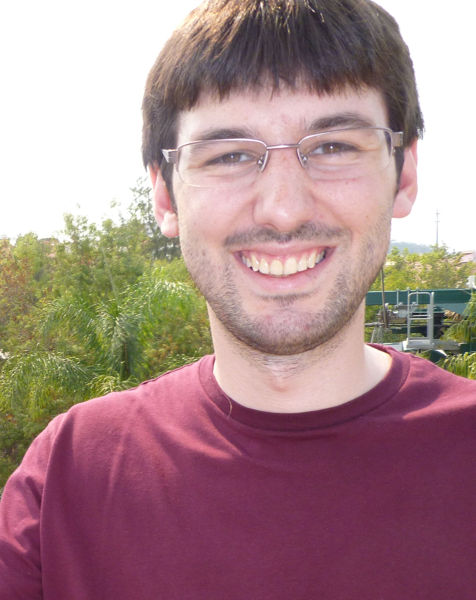

Kevin Healy
PhD student in Zoology at Trinity College Dublin - IE
PhD Student
I am a researcher in the Complex Ecological and Evolutionary Systems were I study macro-evolution/ecology questions. I am mainly interested in using analytical and comparative approaches in order to understand interactions between individuals ans species across a wide ranges of scale.
I also actively communicate my work through teaching and by promoting evolutionary sciences to the general public (namely through the EcoEvo@TCD blog and events such as Discover Research Night).
Collaborators
Andrew Jackson, Natalie Cooper, Thomas Guillierme, Sive Finlay, Adam Kane, Seán Kelly. Luke McNally.
Academic profiles
Google scholar, figshare, ResearcherID, ORCID, Researchgate, GitHub.